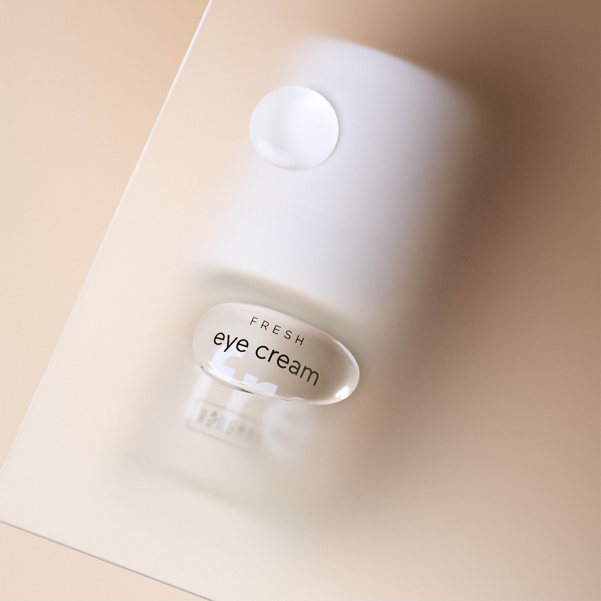
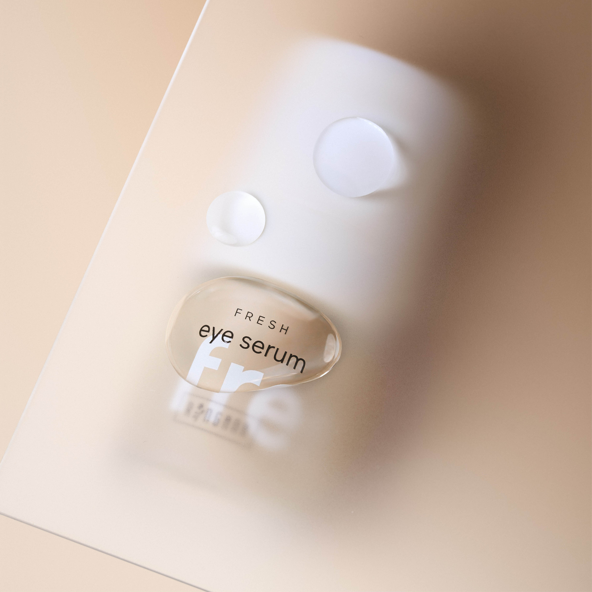

The eye area is the first thing others notice about us — and the first thing that gives in after a bad night, a stressful week, or simply over time. Dark circles, puffiness, fine lines. We know the story.
Two new products from the FRESH line are tackling this from different angles: the reformulated FRESH eye serum for immediate visible results and the brand-new FRESH eye cream with a focus on long-term skin health. Sounds simple — it is. But what's inside is anything but ordinary.
🫶 FRESH eye serum
For immediate results — mornings, mid-day refresh, whenever you need it

Some products make you wait weeks before you notice anything. This one doesn't. The ultra-light gel texture cools instantly on contact, your eyes look clearer, the puffiness goes down. Not dramatically — but noticeably. Every morning.
What's inside:
- Arabian jasmine & hawthorn flowers — reduce puffiness and dark circles, firm the skin
- Upcycled sea buckthorn leaves — soften signs of tiredness, genuinely upcycled from oil production
- Styrian pumpkin seeds from press cake — visibly improve signs of skin ageing
- Baobab fruit & Gleditsia seeds — instantly smooth and firm the eye area
- Peptide complex of 4 peptides — soothing and regenerating
Feather-light texture. Absorbs immediately. Perfect under make-up — your concealer won't have to work overtime anymore.
See eye serum →🌟 FRESH eye cream
Skin Longevity — now for your eye area too

The eye cream takes the longer view. Its approach is Skin Longevity — not quick concealment, but accompanying the skin in preserving its radiance over time. For everyone who wants results that actually last.
What's inside:
- Vegan PDRN from tiger grass — an ingredient more commonly known from medical skincare; supports skin regeneration
- Bakuchiol Nicotinate — next-gen anti-aging that works similarly to retinol, but considerably gentler on the delicate eye area
- Ceramide complex with cholesterol — strengthens the skin barrier, which is especially thin around the eyes
- Peptide complex with carnosine — firmer, smoother skin
- Phytoplankton essence — lifts eyelids and eye contour, brightens dark circles
Intensive care, long-lasting comfort. Morning and evening — or both.
See eye cream →Why two products for one zone?
That's the question I asked too. The eye area simply has different needs at different moments. In the morning it's often about looking refreshed quickly — that's the serum's job. In the evening, when the skin regenerates, it's about building something for the long term — that's what the cream is for.
The eye area is the most delicate zone on the face. And the first to show tiredness, stress and time. Two products, two approaches, designed together — that's not a marketing idea, it's just thorough formulation.
How to use both
FRESH eye serum — mornings (or as a mid-day refresh)
Apply to cleansed eye area, gently tap in. Immediate cooling sensation, eyes look more awake.
FRESH eye cream — mornings after the serum and/or evenings
The cream rounds off the routine with intensive care. In the morning as the finishing layer, in the evening as overnight regeneration.
Watch the live for more
If you want to see it for yourself — we introduced the duo live. All the ingredients, how it feels, what you can actually notice:
Questions about the products?
We use both ourselves and answer honestly — which product for whom, how to start, whether both are worth it. Just write to us.
💬 WhatsApp us👆 WhatsApp opens — tap Send there to complete your message
📅 Book a callAd | Noa & Ulli are independent RINGANA Partners. All products mentioned are RINGANA FRESH natural cosmetics, freshly produced without preservatives.